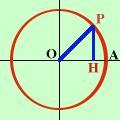

Definizione del seno di un angolo


Il seno di  viene definito come rapporto dell'altezza
PH al raggio della circonferenza viene definito come rapporto dell'altezza
PH al raggio della circonferenza
|
PH |
| sen = |
----- |
|
OP |
Per semplicita' d'ora in avanti considereremo la circonferenza
trigonometrica (cioe'
di raggio 1) quindi possiamo dire il seno di alfa
corrisponde al segmento PH
sen = PH
Valori di sen 
|